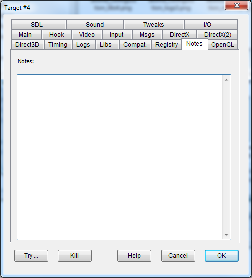
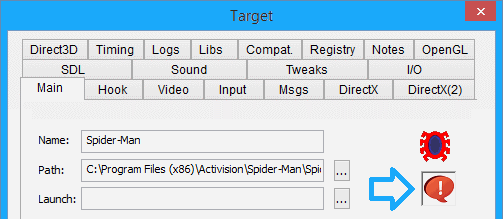

This area allows you to record some notes or comments for this hooked program, such as options you might use, configuration settings, or child processes.
If you save a configuration with any text in the Notes, the Main tab will add an icon with an appearance of an exclamation mark in a speech bubble to the far right of the Launch field:
